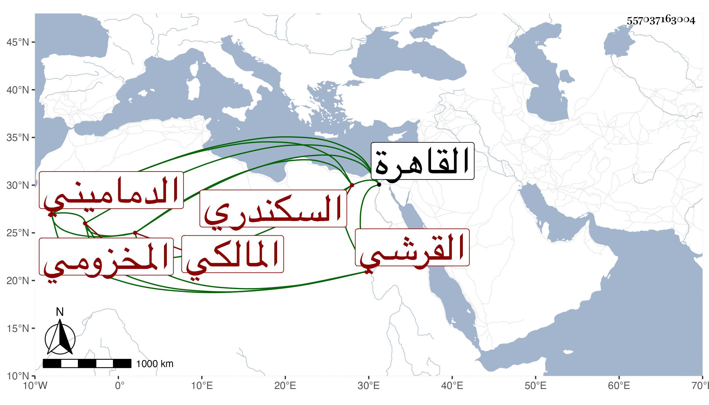

0902Sakhawi.DawLamic.ITO20230111-ara1.EIS1600.557037163004
Biography ID: 557037163004
198
عبد الله بن محمد بن عبد الله بن أبي بكر بن محمد بن سليمان بن جعفر ابن يحيى بن حسين بن محمد بن أحمد بن أبي بكر الجمال أبو محمد بن الشرف أو المعين أبي عبد الله بن البهاء أبي محمد بن التاج بن المعين القرشي المخزومي الدماميني الأصل السكندري المالكي حفيد عم أبي البدر محمد بن أبي بكر بن عمر الآتي ويعرف بابن الدماميني من بيت قضاء ورياسة . اشتغل قليلا وسمع على جده البهاء أحد أئمة الأدب والمسندين من المائة الثامنة وولي قضاء بلده فطالت مدته في ذلك بحيث زادت على ثلاثين سنة وصار وجيها ضخم الرياسة مع نقص بضاعته في العلم والدين لكن لكثرة بذله ومزيد سخائه وقد أفنى مالا كثيرا في قيام صورته في المنصب ودفع من يعارضه حتى أنه كان يركبه بسبب ذلك الدين ثم يحصل له إرث أو أمر من الأمور التي يحصل تحت يده بها مال من أي جهة كانت ساغت أو لم تسغ فلا يلبث أن يستدين أيضا وآخر ما اتفق قيام سرور المغربي عليه حتى عزله الشمس بن عامر فقدم القاهرة وهو متوعك فتوسل بكل وسيلة حتى أعيد ووسع الحيلة في إفساد صورة سرور حتى تمت بل كان ذلك سببا لإعدامه ولم ينتفع القاضي بعده بنفسه بل استمر متعللا حتى مات في رابع ذي القعدة سنة خمس وأربعين . قال شيخنا وأظنه جاز الستين وقد أخذ عنه البقاعي وهجاه ليتوسل بذلك لدنياه ، وكذا سمع عليه المحب بن الإمام والعز السنباطي وابن قمر وآخرون ، قال العيني ولم يكن ممن له اشتغال بالعلم بل كان يخدم الناس كثيرا خصوصا الظلمة الذين لا يستحقون شيئا من ذلك عفا الله عنه .
